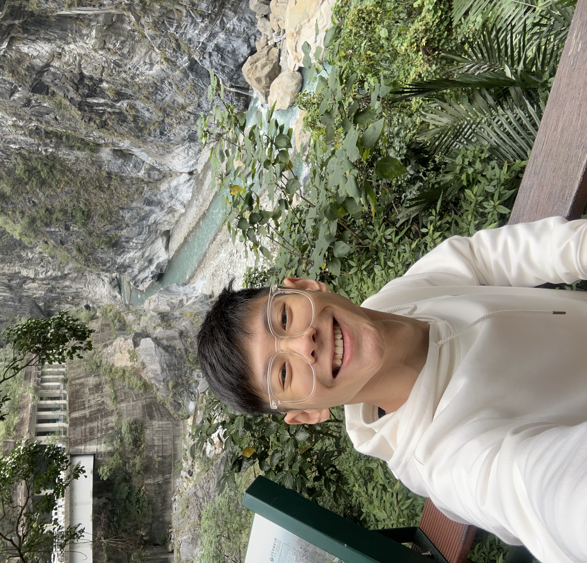

Isaac
Welcome to my website!
I'm a Year 2 Software Engineering student but I don't consider myself much of a "tech" person.
My strengths lie more towards the humanities — I'd love to curl up with a good book — and music.
Also an arbitrary fact about me is that my neck is more than 6 inches long.
Thank you for coming to my TEDTalk and good luck sleeping with that unsettling fact. Adios baby!
In week 2, we learnt how to use selectors.
Firstly, we learnt about Element Selectors, such as using it on <p>.
Here, I have made the colour of ALL paragraph text to be brown!
Secondly, we learnt about Class Selectors, which starts with a ".".
We can use this recurring instances!
All elements with the class "often" will have a cream-coloured background.
Finally, we learnt about ID Selectors, which starts with a "#".
We can use this for unique instances!
All elements with the id "unique" will have a border around them.